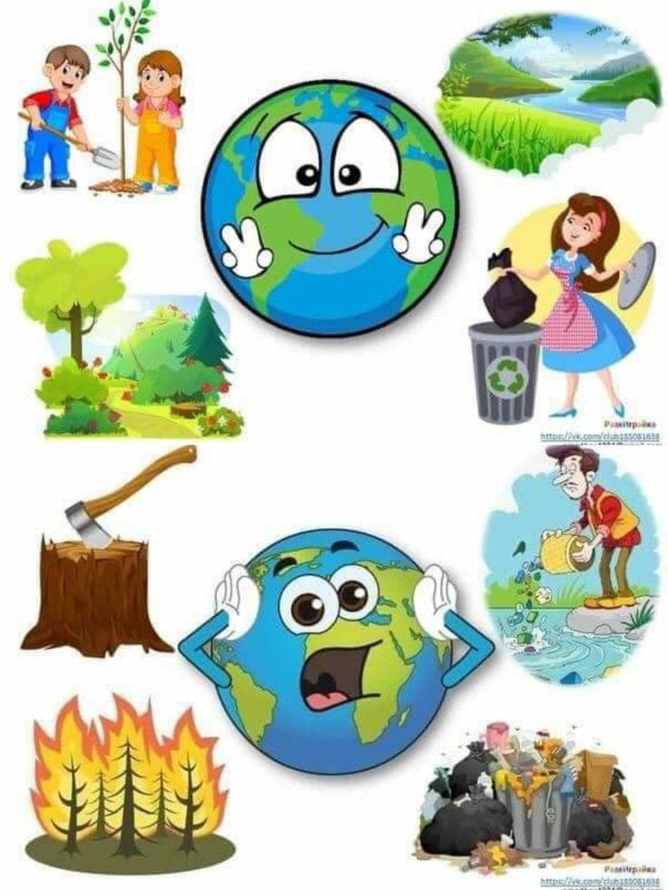
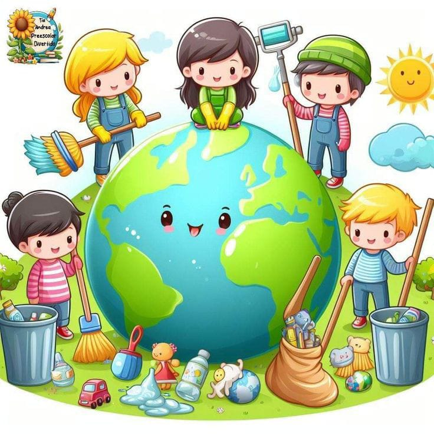
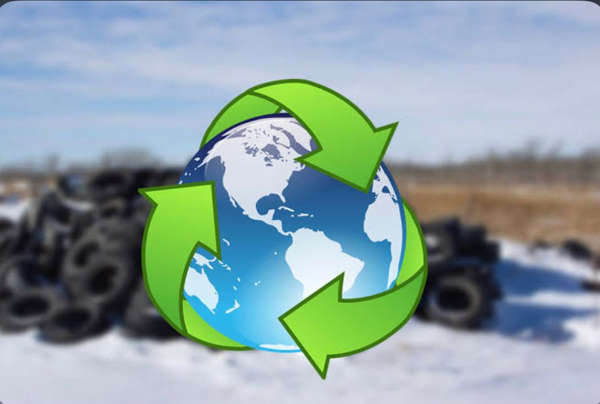

nacimos hace mas de 25 años.Y no lo hicimos para fabricar ni para vender nada.Nacimos para cumplir un proposito:
trabajar por un futuro sin reciduos,que genere un impacto positivo en el medio ambiente y en la vida de las personas.
y trabajamos para lograrlo desde el convencimiento y creyendo firmemente en lo que hacemos, porque ese proposito esta en la naturaleza.
somos muchos los que compartimos esta responsabilidad y este camino no vamos a recorrerlos solos.Creeemos en el poder de la colavoracion.
Y tan importante como cumplir nuestro proposito es la manera en la que lo hacemos.Nuestro compromiso es con un medio ambiente en el que ademas habitan los seres humanos.
nos pensamos en ellos como consumidores si no como personas por las que compartimos causas y preocupaciones y por eso tenemos con ellos una relacion estrecha y complice.
separar bien es la clave para que todo el proceso de reciclaje funcione.
Reciclate en el rediseño en linea con su proposito de trabajar por un futuro sin residuos a tenido en cuenta el impacto ambiental
de cada detalle desde minimisar el uso de tintas hasta los reciduos derivados de la produccion.
Reciclar conlleva a ahorrar materias primas energia, agua y reducir las emiciones de gases de efecto invernadero y ademas generar nuevos puestos de trabajo y tejido industrial.
Sin duda los beneficios de reciclar nuestros residuos son enormes en comparacion con la accion tan sencilla y cotidiana que supone
Reciclando evitas que los productos y materiales se conviertan en residuos transformandolos en otros completamente nuevos alargando su vida util y ayudando a la perservacion de los naturales del planeta
En 2023 gracias al reciclaje de las mas de 16 millones de toneladas de agua y de 984 millones de energia ademas de evitar la emision de 169 millones de toneladas de CO2 a la atmosfera.
Si ya conoces las 3Rs - reducir, reutilizar, reciclar y quieres ir mas alla para fomentar la economia circular ¡amplia tu vocabulario sostenible!.
esta primera clave la podemos aplicar dede el consumo de agua, luz o cortando el grifo cuando no estamos haciendo uso de ellos
Reciclar: se consigue depositando cada residuo en el contenedor especifico para el.
Reutilizar: consiste en dar una segunda vida a nuestros productos, otorgandoles otra utilidad
